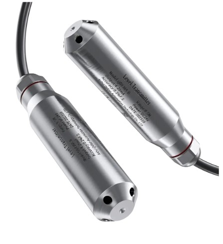
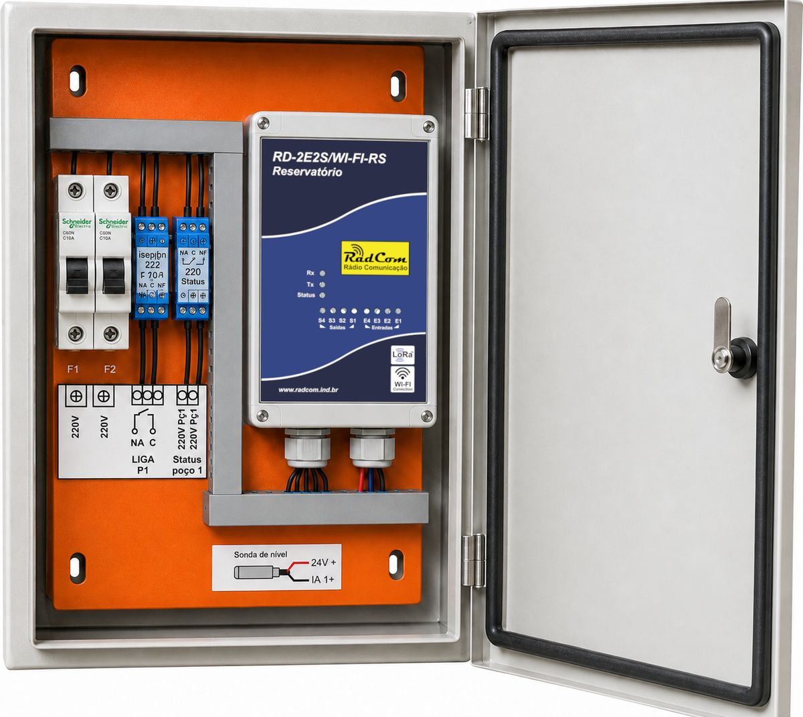
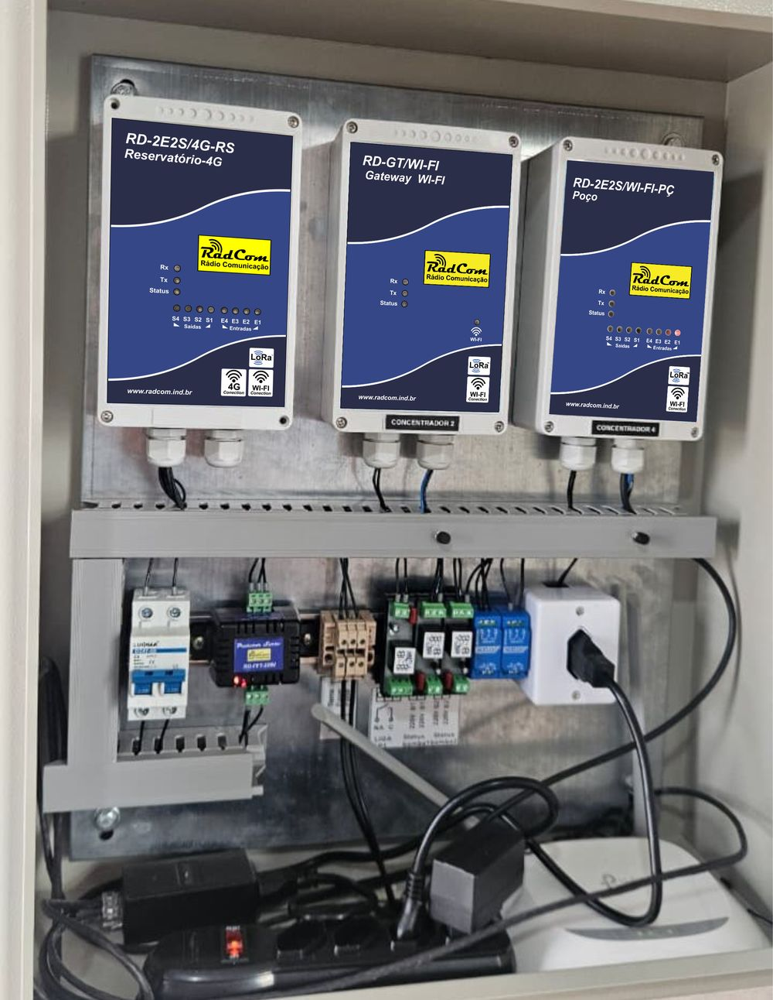
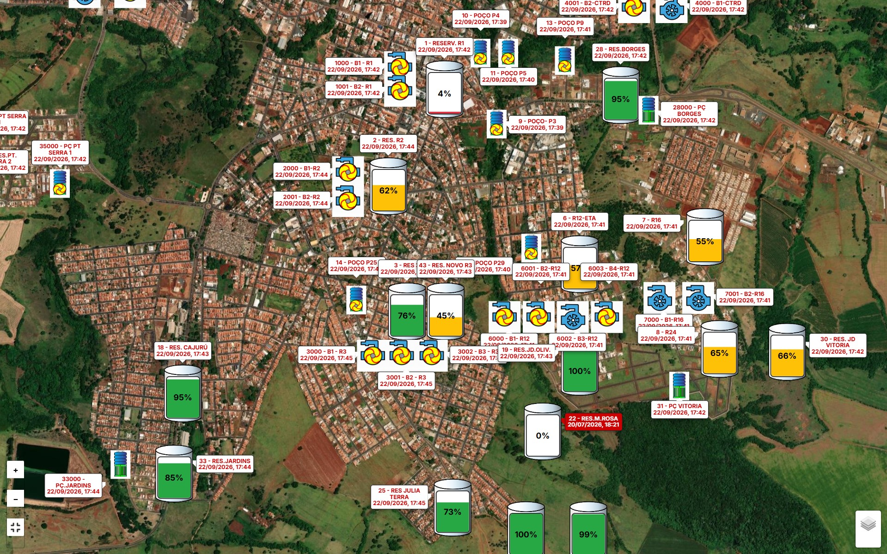
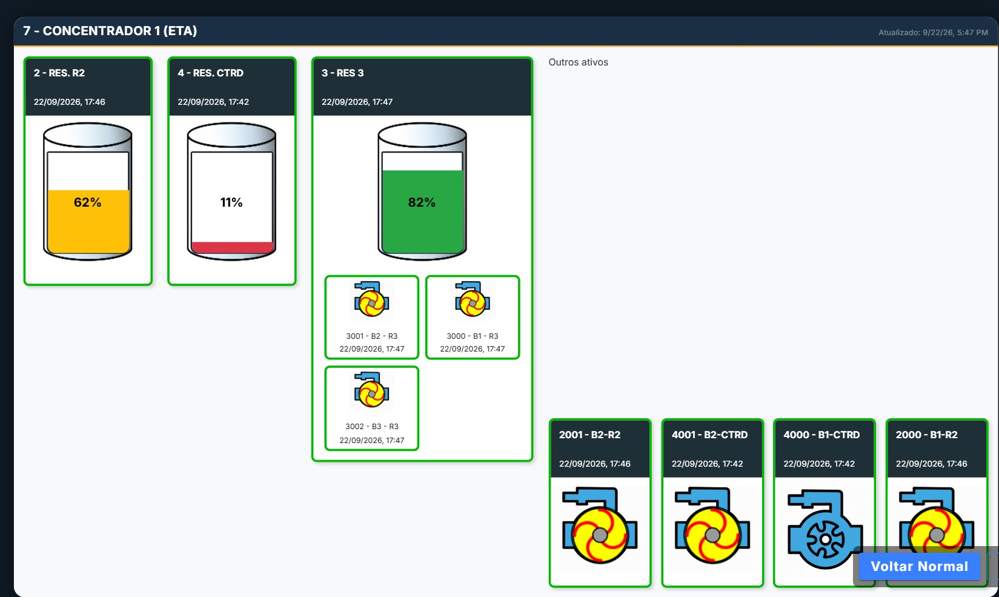
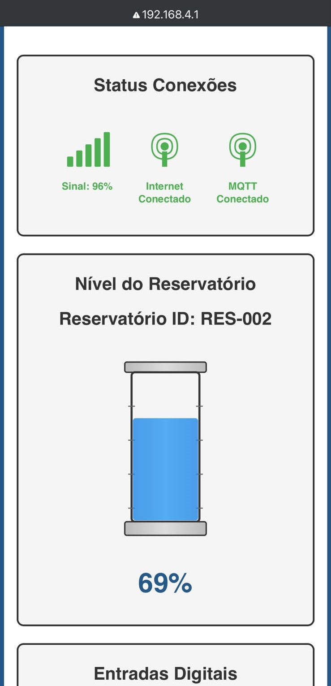
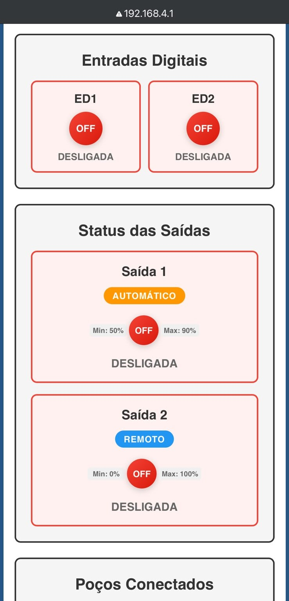

RadCom Hidro
Do reservatório à bomba.
Monitore o nível da água e automatize o acionamento da bomba conforme a configuração da instalação.
- Comunicação por rádio LoRa
- Wi-Fi ou 4G até a plataforma
- Sonda hidrostática de nível
- LEDs Rx · Tx · Status
01 / Aplicações
Onde a Hidro atua
Três funções para entender a linha antes de escolher o equipamento.
-
Medir o nível
Acompanhe a variação do nível da água no reservatório com a sonda hidrostática.
-
Acionar a bomba
Use os limites configurados para ligar e desligar a bomba de forma automática.
-
Acompanhar à distância
Consulte os dados da operação na plataforma, com a conectividade adequada a cada ponto.
02 / Funcionamento
Como o sistema funciona
-
01 · MEDIÇÃO
Sonda
No fundo do reservatório, lê o nível da água.
-
02 · TRANSMISSÃO
Módulo do reservatório
Transmite o nível por rádio.
-
03 · CONTROLE
Módulo do poço
Compara o nível com os limites configurados.
-
04 · AÇÃO
Bomba
Liga ou desliga conforme o comando.
Acesso remotoA plataforma recebe os dados por Wi-Fi ou 4G, conforme o modelo e a instalação: os reservatórios Wi-Fi e 4G se conectam sozinhos, e o Reservatório LoRa usa um gateway.
Ver equipamentos03 / Catálogo
Equipamentos da Hidro
Escolha pelo papel na instalação: controle do poço, medição no reservatório ou conectividade.

Sensor de nível
Sonda hidrostática
Instalada no fundo do poço ou do reservatório, mede a pressão da coluna d'água e a converte em nível.
- 01 · MedePressão da água no fundo
- 02 · TransmiteNível enviado por LoRa
- 03 · AcionaBomba liga ou desliga

Quadro de comando
Tudo organizado em um só quadro
O módulo, a proteção elétrica e as ligações da bomba e da sonda, prontos para instalar junto ao poço ou ao reservatório.

Instalação em campo
Wi-Fi ou 4G: a conexão certa para cada ponto
-
Com Wi-Fi no local
Gateway Wi-Fi ou Reservatório Wi-Fi usam a rede do local para enviar os dados.
-
Sem Wi-Fi no local
Gateway 4G ou Reservatório 4G conectam pela rede celular, indicados para áreas rurais e remotas.
04 / Monitoramento
Uma visão da operação
Consulte o nível e o estado da bomba na plataforma, conforme os equipamentos e a configuração utilizados.




Configuração local
Cada equipamento tem sua página de configuração
-
Estado das conexões
Sinal, internet e comunicação com a plataforma.
-
Nível do reservatório
Leitura da sonda em tempo real.
-
Estado das saídas
Cada saída controla uma bomba, em modo automático ou remoto.
-
Entradas digitais
Monitoram equipamentos próximos, como uma bomba dosadora.
Demonstração
Veja a lógica funcionando
O reservatório transmite o nível por rádio, o poço liga ou desliga a bomba conforme os limites e o gateway leva o dado à plataforma.
Demonstração ilustrativa
Para uma melhor visualização, deite o seu dispositivo.
Ajuste os limites
Valores e tempos fictícios, só para mostrar a lógica de acionamento.